พื้นที่อ่านและเรียนรู้เรื่องเงินA place to read and learn about money
บทความฉบับเข้าใจง่าย อ้างอิงมาตรฐานสากล อ่านตามซีรีส์ได้ และทุกบทความมีเครื่องมือคำนวณฟรีให้ลองทันทีPlain-language guides grounded in global standards · read them as series, with a free calculator in every one.
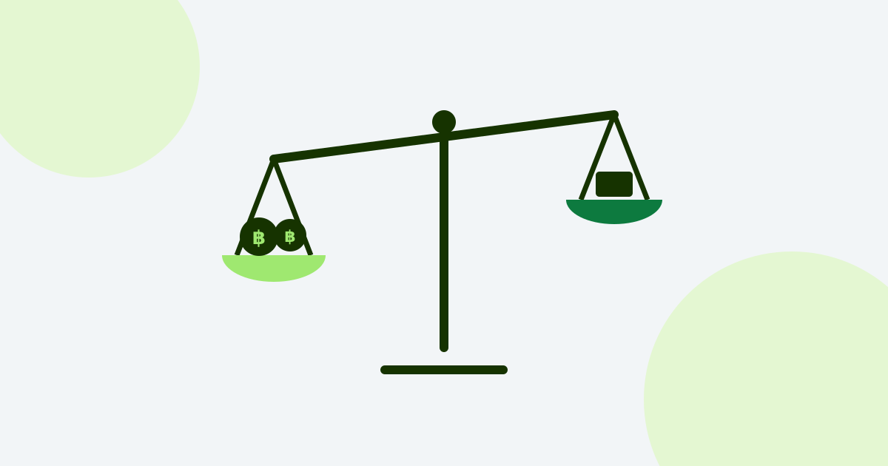
รากฐานFoundationNet Worth คืออะไร? ตัวเลขเดียวที่บอกฐานะจริงNet worth: the one number that tells the truth
รายได้สูงไม่ได้แปลว่ารวย วิธีคำนวณความมั่งคั่งสุทธิ และเป้าตามอายุHigh income ≠ wealthy. How to compute it, and age-based targets.
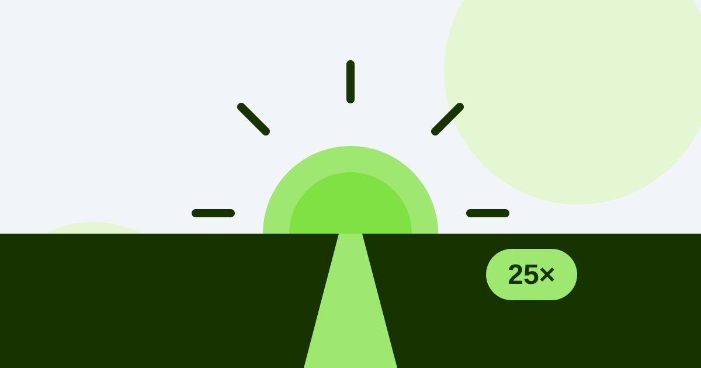
เกษียณRetireเกษียณต้องมีเงินเท่าไหร่ถึงพอ? (กฎ 4%)How much do you need to retire? The 4% rule
คำนวณเงินเกษียณด้วยกฎ 25 เท่าและกฎ 4% พร้อมตัวอย่างคนไทยThe 25x and 4% rules, with Thai examples and a free simulator.
ลดหย่อนภาษี 2567 มีอะไรบ้าง? RMF SSF ThaiESGThai tax deductions 2024
รวมรายการลดหย่อนปี 2567 ทุกตัว เพดานเท่าไหร่ ซื้ออะไรก่อนEvery deduction, its cap, what to buy first, how much you save.
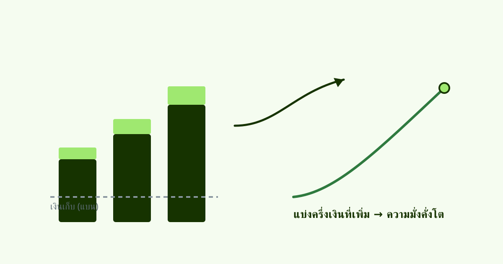
รากฐานFoundationเงินเดือนขึ้น 20% แต่สิ้นปีเงินเก็บเท่าเดิมYour raise keeps disappearing
lifestyle inflation ทำงานยังไง และกฎแบ่งครึ่งเงินที่เพิ่มขึ้นHow lifestyle inflation works, and the split-the-raise rule.
Net Worth คืออะไร? ตัวเลขเดียวที่บอกฐานะจริงNet worth: the one number that tells the truth
รายได้สูงไม่ได้แปลว่ารวย วิธีคำนวณความมั่งคั่งสุทธิ และเป้าตามอายุHigh income ≠ wealthy. How to compute it, and age-based targets.
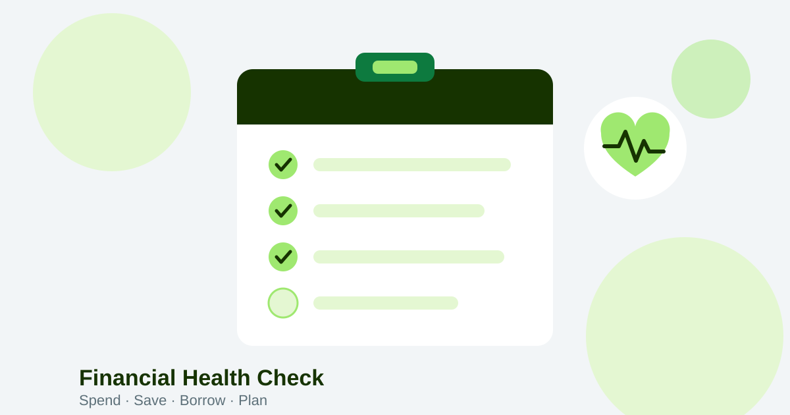
รากฐานFoundationเช็คสุขภาพการเงิน 8 ข้อ · แข็งแรงหรือแค่ยังไหว?The 8-point financial health check
กรอบ Spend/Save/Borrow/Plan 8 ตัวชี้วัดที่บอกว่าการเงินคุณแข็งแรงจริงไหมThe global Spend/Save/Borrow/Plan framework.
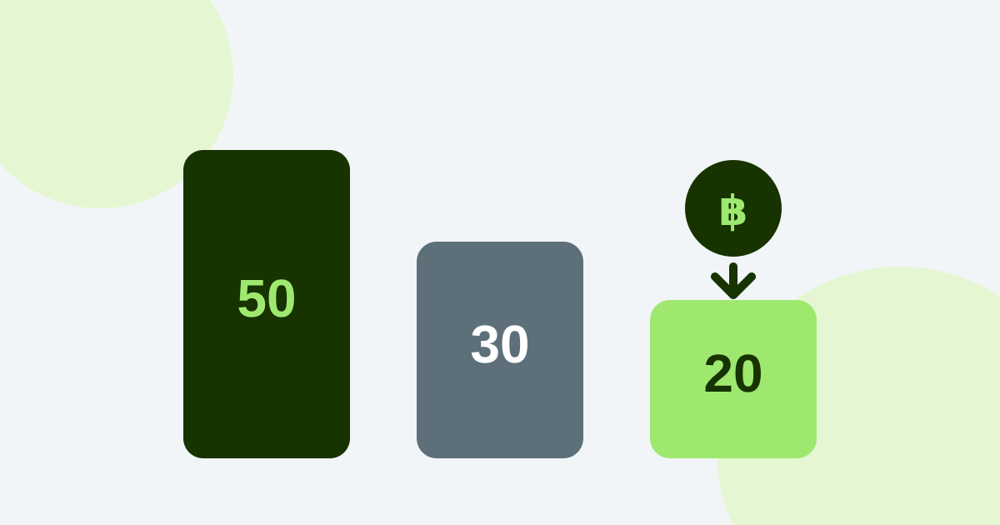
รากฐานFoundationเงินเดือน 30,000 / 50,000 ควรเก็บเท่าไหร่?How much should you save on a 30k/50k salary?
สูตร 50/30/20 ปรับเข้าค่าครองชีพไทย พร้อมตัวอย่างทุกช่วงเงินเดือนThe 50/30/20 split adapted to Thai cost of living.
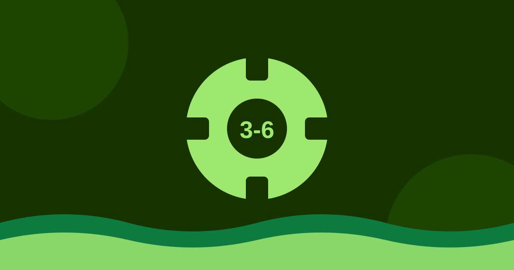
รากฐานFoundationเงินสำรองฉุกเฉินควรมีเท่าไหร่? เก็บที่ไหนดีHow big should your emergency fund be?
ทำไมต้องมี 3-6 เดือน ฟรีแลนซ์ต้องเท่าไหร่ เก็บที่ไหนให้สภาพคล่องดีWhy 3-6 months, and where to park it.
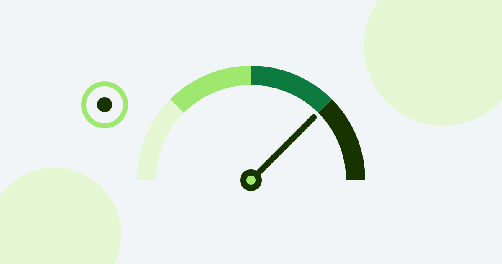
ลงทุนInvestก่อนซื้อกองทุน รู้จัก Risk Profile ของตัวเองหรือยัง?Know your risk profile before you buy
ความเสี่ยง "รับได้" กับ "รับไหว" ต่างกันยังไงWillingness vs capacity, and the portfolio you can hold.
DCA คืออะไร? เริ่มลงทุนรายเดือนฉบับมือใหม่What is DCA? Monthly investing for beginners
DCA ตัดอารมณ์ออกจากการลงทุน เทียบ DCA vs ลงก้อนเดียว vs จับจังหวะDCA vs lump sum vs market timing, with real steps.
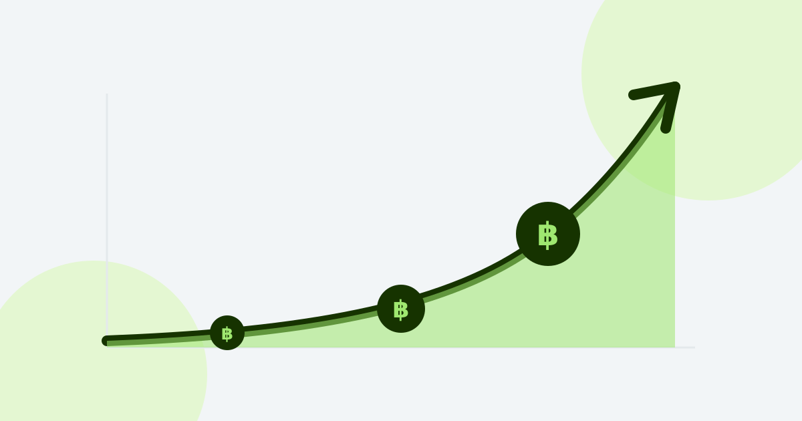
ลงทุนInvestพลังดอกเบี้ยทบต้น: เริ่มเร็ว 5 ปี ปลายทางต่างล้านThe power of compounding
ทำไมเวลาสำคัญกว่าเงิน ค่าธรรมเนียม 1% กินเงินมหาศาลWhy time beats amount, and why a 1% fee costs a fortune.
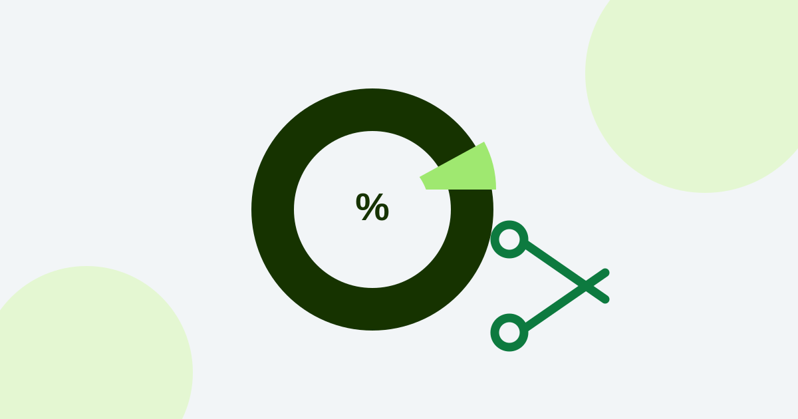
ลงทุนInvestค่าธรรมเนียมกองทุน 1.5% ไม่ใช่เรื่องเล็กFund fees of 1.5% are not small
ค่าธรรมเนียมกินผลตอบแทนแค่ไหนใน 20 ปี ทำไม index ถูกกว่า 5 เท่าHow fees compound over 20 years; why index funds cost 5x less.
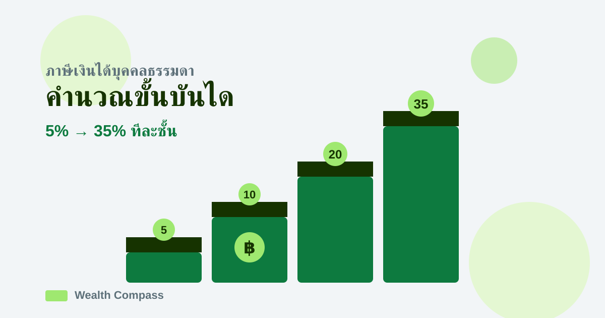
ภาษีTaxภาษีเงินได้บุคคลธรรมดา 2567: คำนวณขั้นบันไดใน 10 นาทีThai personal income tax in 10 minutes
ขั้นบันได 5-35% ทำงานแบบไหน และความเข้าใจผิดเรื่อง bracketHow the 5-35% ladder works, and the bracket myth.
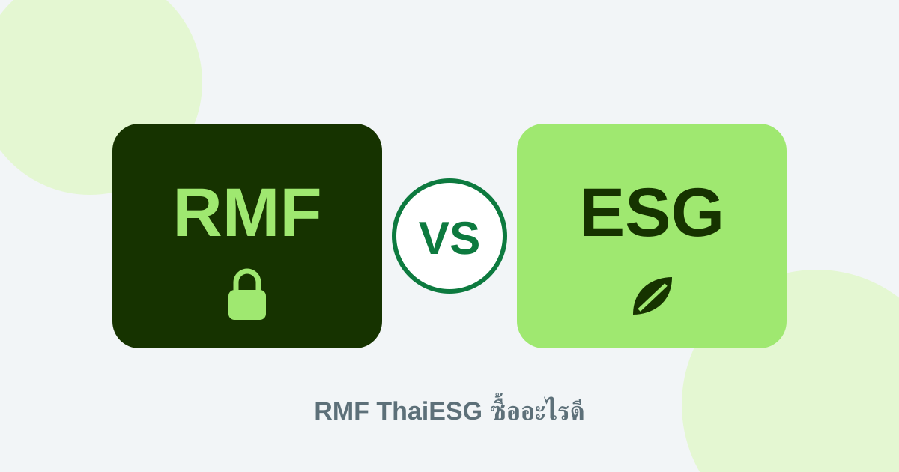
ภาษีTaxRMF vs ThaiESG ซื้ออะไรก่อน? เทียบเพดาน เงื่อนไขRMF vs ThaiESG: which to buy first?
ต่างที่เพดาน ระยะถือครอง เหมาะกับใคร พร้อมลำดับซื้อCaps, holding periods, and the smart buying order.
ลดหย่อนภาษี 2567 มีอะไรบ้าง? RMF SSF ThaiESGThai tax deductions 2024
รวมรายการลดหย่อนปี 2567 ทุกตัว เพดานเท่าไหร่ ซื้ออะไรก่อนEvery deduction, its cap, what to buy first.
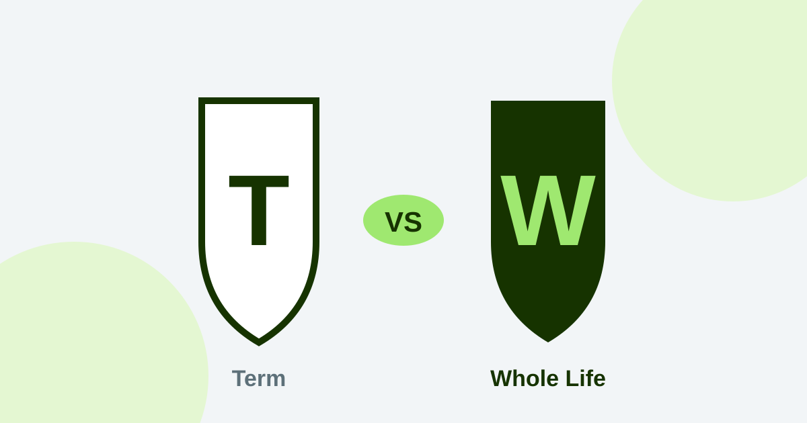
ปกป้องProtectประกันชีวิต Term vs Whole Life ซื้อแบบไหนดี?Term vs whole life: which to buy?
เบี้ยต่างกัน 10 เท่า ความคุ้มครองเท่ากัน ใครเหมาะแบบไหนTerm costs 10x less for the same cover · who each fits.
ประกันสุขภาพจำเป็นไหม? เลือกยังไงไม่ให้เบี้ยบานปลายDo you need health insurance? How to choose
ค่ารักษา รพ.เอกชนแพงแค่ไหน วิธีเลือกแผนเหมาจ่ายPrivate hospital costs and choosing a plan without overpaying.
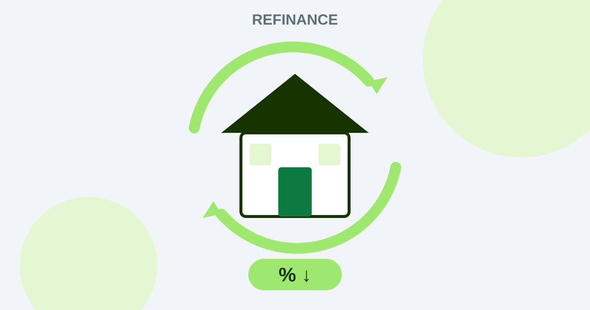
หนี้สินDebtรีไฟแนนซ์บ้านคุ้มไหม? คิดให้ขาดก่อนย้ายธนาคารRefinancing your home loan: when it pays
ดอกลอยตัวหลังปี 3 แพงแค่ไหน และสูตรคุ้มทุนใน 5 นาทีPost-teaser rates, the real costs, and a 5-minute break-even.
ปลดหนี้บัตรเครดิตวิธีไหนดี? Snowball vs AvalancheSnowball vs avalanche
วิธีไหนประหยัดดอก วิธีไหนชนะใจ ทำไมจ่ายขั้นต่ำคือกับดักWhich saves more interest, and why minimum payments trap you.
เกษียณต้องมีเงินเท่าไหร่ถึงพอ? (กฎ 4%)How much do you need to retire? The 4% rule
คำนวณเงินเกษียณด้วยกฎ 25 เท่าและกฎ 4% พร้อมตัวอย่างคนไทยThe 25x and 4% rules, with Thai examples.
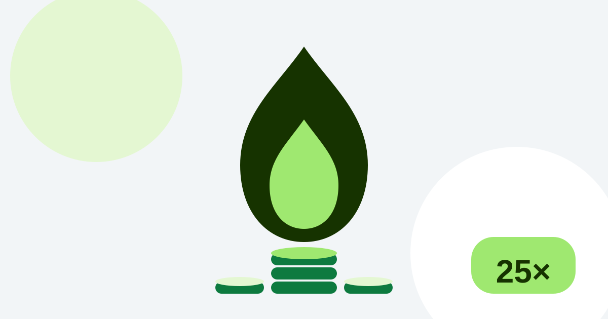
เกษียณRetireFIRE คืออะไร? เกษียณก่อน 40 ในไทยทำได้จริงไหมWhat is FIRE? Early retirement in Thailand
อัตราออม 50%+ ทำได้จริงแค่ไหนในบริบทไทยThe FIRE movement and 50%+ savings rates.
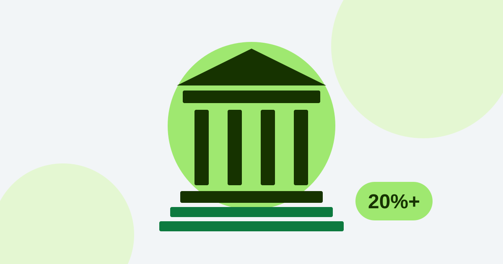
เกษียณRetireประกันสังคม ม.33 ได้บำนาญเท่าไหร่?Thai social security pension: how much?
สูตรคำนวณบำนาญ ม.33/39 ได้เดือนละเท่าไหร่ และต้องเติมอีกแค่ไหนThe SSO pension formula and the gap you fill yourself.
อ่านจบแล้ว อยากให้ช่วยวางแผนจริงจัง?Ready to turn reading into a real plan?
นัดคุยกับนักวางแผนการเงินอิสระ 30 นาที ฟรี ไม่มีข้อผูกมัดBook 30 free minutes with an independent planner · no strings.